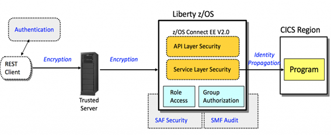
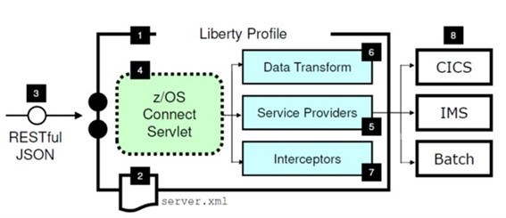
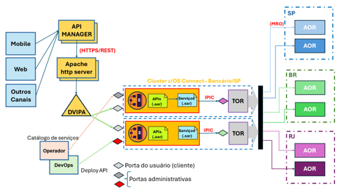
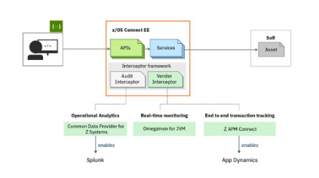
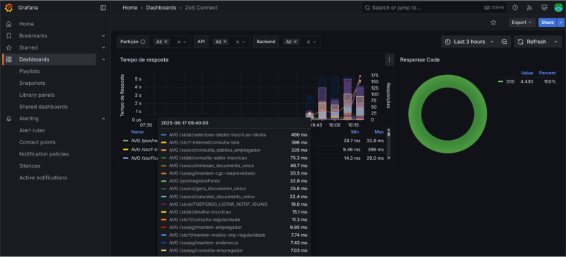

Arquitetura de Referência para Adoção do zOS Connect
Importante: Essa arquitetura de referência se encontra em fase de validação e não possui nenhum indicativo de uso geral pelas equipes. Havendo entendimento que ela se encaixa nas necessidades de seu sistema, a SUART deve ser acionada.
INTRODUÇÃO
O z/OS Connect é uma solução da IBM que implementa a integração entre os sistemas mainframe e outras aplicações baseadas em outras plataformas, utilizando interfaces RESTful APIs. Ele é projetado para permitir que os serviços e dados implementados no mainframe possam ser acessados e consumidos por aplicações móveis, web e nuvem, sem a necessidade de alteração nos sistemas legados.
Esta ferramenta auxilia a modernização de aplicações mainframe e proporciona uma forma eficiente de conectar aplicações COBOL com as plataformas baixa, reduzindo o custo e o tempo de integração. No cenário atual de desenvolvimento de aplicações na Caixa, o z/OS Connect é uma ferramenta que facilitará a integração do mainframe com tecnologias da plataforma baixa, mantendo a robustez e confiabilidade do sistema legados.
APLICAÇÃO DO Z/OS CONNECT
Integração de Sistemas Legados com Aplicações
O z/OS Connect oferece a possibilidade de expor funções e serviços de sistemas legados em um formato acessível via APIs REST. Isso facilita a integração com tecnologias web, como plataformas móveis, microsserviços, nuvem e ferramentas de análise.
Acesso a Dados e Funcionalidades no Mainframe
O zOS Connect permite que os dados e funcionalidades armazenados no mainframe sejam acessados de forma simples por outros aplicativos, com interações em tempo real e integração com outras bases de dados e serviços.
Modernização de Aplicações COBOL
Através do z/OS Connect. é possível modernizar os sistemas legados sem a necessidade de reescrever completamente os aplicativos reduzindo o risco de falhas e os custos de reimplementação, ao mesmo tempo que facilita a migração gradual para arquiteturas baseadas em microsserviços ou nuvem.
Integração com Aplicações Hospedadas em Nuvem
O zOS Connect permite implementar estratégias híbridas de nuvem utilizando o z/OS Connect para expor suas funcionalidades em plataformas de nuvem (AWS, Azure, IBM Cloud), permitindo que seus dados sejam acessados de forma segura e escalável.
VANTAGENS DO Z/OS CONNECT
Facilidade de Integração
O z/OS Connect utiliza APIs REST, que são amplamente aceitas e compreendidas por desenvolvedores modernos, o que facilita a integração com outras aplicações. Isso reduz significativamente o tempo de desenvolvimento necessário para conectar sistemas novos com os legados.
Agilidade na criação de serviços
Ele permite a exposição rápida de recursos do mainframe sem que seja necessário reescrever ou modificar o código legado. Além disso, o z/OS Connect oferece uma maneira ágil de implementar novos serviços que podem ser usados por várias plataformas, agilizando o processo de inovação.
Redução de Custos
Com o z/OS Connect, as empresas podem aproveitar seus investimentos em sistemas legados, sem a necessidade de uma reestruturação completa. Isso reduz o custo total de propriedade (TCO) e mantém a robustez e confiabilidade do mainframe enquanto aproveita a flexibilidade das tecnologias modernas.
Segurança
O z/OS Connect oferece uma camada de segurança robusta, suportando autenticação e autorização com base em padrões modernos de segurança, como OAuth 2.0. Isso garante que os dados acessados por aplicações externas sejam protegidos, mantendo os padrões de segurança exigidos pelas empresas.
Escalabilidade e Desempenho
Com a infraestrutura do mainframe z/OS, o z/OS Connect pode lidar com grandes volumes de transações e de dados de maneira eficiente e escalável. Essa capacidade de lidar com grandes cargas de trabalho é uma das principais vantagens dos sistemas mainframe em conjunto com o z/OS Connect.
Desempenho Otimizado
A solução foi projetada para integrar o alto desempenho do mainframe com a flexibilidade das APIs REST, proporcionando uma integração sem perdas significativas de desempenho.
Suporte a Microsserviços
O z/OS Connect permite que empresas adotem uma arquitetura baseada em microserviços ao integrar seus sistemas legados com soluções modernas de forma transparente. Isso é particularmente útil em um cenário em que as empresas buscam agilidade e escalabilidade.
A ARQUITETURA DO Z/OS CONNECT
Arquitetura Conceitual
A arquitetura do z/OS Connect foi desenvolvida para permitir a integração entre sistemas legados implantados no mainframe (executando no z/OS e/ou CICS) e aplicações que estão na plataforma baixa que utilizam APIs RESTful.
A figura abaixo mostra, de maneira conceitual, o fluxo de uma requisição HTTP passando pelos módulos que asseguram a segurança da solicitação do usuário.

Anatomia do zOS Connect

- Servidor Liberty
- Arquivo de configuração e descrição de parâmetros server.xml
- Requisições HTML/RESTFul (protocolo JSON)
- Servlet listener
- Serviços de conectividade
- Serviços de transformação de JSON para leiaute do backend (Ex. Book COBOL)
- Interceptadores para configurações especiais ou chamada de rotinas
- Exemplos de backend
Arquitetura z/OS Connect na CAIXA

No ambiente de produção o z/OS connect está instalado no plex da vertical Bancária. A interação com os sites Negocial e Social se dá pela rede TCP/IP com entrada nos CICS TOR desses sites.
Na configuração de infraestrutura para o z/OS Connect há um servidor Apache que servirá de proxy, pois o API Manager da Caixa não mantém a conexão em modo KeepAlive, tornando a comunicação com o mainframe custosa em termos de I/O.
Logo após o servido Apache o DVIPA fará a distribuição de carga entre os servidores Liberty onde estão implantadas as instâncias o z/OS Connect que direcionará as requisições vindas do APIM para os respectivos serviços.
O z/OS Connect invoca as transações do backend através de uma chamada IPIC. Essa forma de comunicação é um tipo de link de intercomunicação que permite comunicações CICS-to-CICS em um subsistema de IP e usar o SSL - Secure Sockets Layer - para prover segurança na linha de chamada dos serviços.
Monitoração
O z/OS Connect inclui funcionalidade de administração para o gerenciamento das APIs e monitoramento de desempenho. Essas ferramentas permitem que os operadores e desenvolvedores visualizem logs, estatísticas de desempenho e métricas de utilização além de poder controlar e configurar o comportamento das APIs.
O z/OS Connect fornece dados de monitoramento através da estrutura dos interceptadores, que permite a análise e publicação de informações de auditoria e rastreamento de requisições.

A zOS Connect fornece nativamente a geração de registros SMF para coleta de informações sobre a saúde e desempenho das APIs. Essas informações podem ser encaminhadas a ferramentas de preparo, consolidação dos dados e exibição para os usuários interessados.
O z/OS Connect, na Caixa, está configurado para gravar registros SMF tipo 123, versão 2, que capturam informações das requisições individuais. Esses dados são usados no Grafana, para obter informações sobre suas cargas de trabalho da APIs e auxiliar no planejamento de capacidade e para determinação de problemas.
A versão 2 contém informações mais detalhadas sobre cada solicitação, incluindo informações sobre para onde a resposta da requisição foi enviada.
A versão 2, do registro SMF, contém informações de várias solicitações em único registro, tornando mais eficiente a leitura e publicação, pois as informações do servidor zOS Connect são capturadas uma vez por registro, em vez de para cada requisição do usuário.

Após a captura das informações utilizando a ferramenta Prometheus, que por sua vez, gera o datalog para consumo dos painéis do Grafana como mostrado acima e disponível em https://monitoracao.az.cloud.caixa/grafana.
CONSTRUINDO AS APIs
Preparação do Ambiente para desenvolvimento
-
Solicitar à via serviços.caixa a instalação do Eclipse for zOS Connect EE;
-
Solicitar via acesso ao TSO-SP (Grupo ZCNTAPID);
-
Configurar a conexão no Eclipse para o z/OS Connect;
-
Configurar a conexão no Eclipse para o TSO Remoto;
Elaboração da API
Passo 1 - Programa COBOL:
- COBOL CICS com ou sem DB2;
- Separar a book, se o programa for novo, que conterá a entrada e saída de dados, sempre começando com o nível 01;
- Programa não pode estar preparado para start ou com dados no protocolo ISO-8583, e sim para link;
-
Deve ser instalado nos CICS TOR somente, com as seguintes opções:
- Remote atributes
- Dynamic routing status: Yes
- Remote system name: VLM
Observação: todo programa que precisar ser chamado por uma transação mirror deve conter configurações acima.
Passo 2 - Transação MIRROR:
- Deve existir uma transação mirror, que deve apontar para o programa DFHMIRS, para cada programa Cobol;
- A transação deve ser definida no CICS TOR e AOR;
- Deve ser implantada MPAS para liberação de acesso na transação (em PRD);
- A MPAS deve contemplar tanto usuários de serviço quanto usuários intranet;
- Em desenvolvimento as transações mirror devem estar contidas no grupo do sistema, ex. DESCLI para os serviços do SICLI;
Observação: O usuário de serviço deverá estar cadastrado no grupo ZCNTAPID.
Passo 3 - Acessos:
- No cabeçalho das requisições para a API deve conter um campo chamado clientType, cujo valor pode ser: internet, intranet e preferred;
- Quando for internet, a transação CICS será iniciada com o valor da claim service_username, e o token será validado utilizando-se o realm internet do SSO;
- Quando for intranet, a transação CICS será iniciada com o valor da claim service_username, e o token será validado utilizando-se o realm intranet do SSO;
- Quando for preferred, a transação CICS será iniciada com o valor da claim preferred_username, e o token será validado utilizando-se o realm intranet do SSO;
Observação: Quando o usuário do token for de serviço, obrigatoriamente, a claim service_username de ser incluída no token. Observação: O usuário de serviço, ser for dos sites de Brasília e Rio deverá, também, ser cadastrado no site de São Paulo.
Histórico da Revisão
| Data | Versão | Descrição | Autor |
|---|---|---|---|
| 25/06/2025 | 1.0 | Criação do documento | SUART |